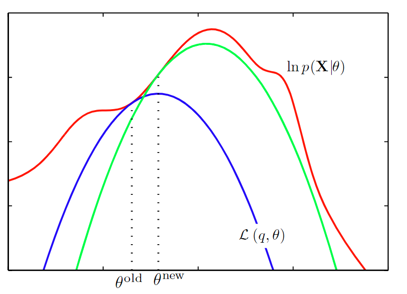

最大似然
最大似然是指
在含有隐变量的模型中，最大似然是比较麻烦的事情。
要先积分掉所有的 $\mathbf{Z}$，再进行对数化。对于指数族分布的 $p ( \mathbf { X } , \mathbf { Z } | \boldsymbol { \theta } )$ 而言，是一个晴天霹雳。
分解对数似然
现在引入一个隐变量的分布 $q(\mathbf {Z})$，它可以在 $\ln p ( \mathbf { X } | \theta )$ 的分解中起到作用：
记
其中
这里已经可以看出求和号被拉到了对数的外面，指数族分布的计算有望了。
KL散度
其中的 $\mathrm { KL } ( q | p )$ 是分布 $q(\mathbf Z)$ 和 后验分布 $p ( \mathbf { Z } | \mathbf { X } , \boldsymbol { \theta } ) $ 的 KL 散度。根据其数学性质，有
当且仅当 $q(\mathbf Z) = p ( \mathbf { Z } | \mathbf { X } , \boldsymbol { \theta } )$ 时等于0.
Lowerbound
从上面的性质可得 $\ln p ( \mathbf { X } | \boldsymbol { \theta } ) \geq \mathcal { L } ( q , \boldsymbol { \theta } ) $ 。也就是说如果可以确定得到 $\mathcal { L } ( q , \boldsymbol { \theta } ) $，则 $\ln p ( \mathbf { X } | \boldsymbol { \theta } )$ 将必然大于这个界限。为了得到最大的 $\ln p ( \mathbf { X } | \boldsymbol { \theta } )$, 则必须要尽量提高它的下界 $\mathcal { L } ( q , \boldsymbol { \theta } )$ 。
EM 算法
目标是最大化对数似然 $\ln p ( \mathbf { X } | \boldsymbol { \theta } )$ 。在这一过程中，也最大化了 $\mathcal { L } ( q , \boldsymbol { \theta } )$。两者交替进行最大化。
E 步
记当前的参数为 $\boldsymbol { \theta }^{old}$。如果固定 $\boldsymbol { \theta }^{old}$，则 $\mathcal { L } ( q , \boldsymbol { \theta } ^ {old} )$ 是关于 $q(\mathbf Z)$ 的函数；另一方面，$\ln p ( \mathbf { X } | \boldsymbol { \theta } ^ {old})$ 不依赖于 $q(\mathbf Z)$。因此可以认为自变量是 $q(\mathbf Z)$, 那么 $\ln p ( \mathbf { X } | \boldsymbol { \theta } ^ {old})$ 是常量，要最大化 $\mathcal { L } ( q , \boldsymbol { \theta } ^ {old} )$。当且仅当 $\mathrm { KL } ( q | p ) = 0$ 时，取到最大的 $\mathcal { L } ( q , \boldsymbol { \theta } ^ {old} )$。根据 KL 散度的性质，此时 $q(\mathbf Z) = p ( \mathbf { Z } | \mathbf { X } , \boldsymbol { \theta } ^ {old} )$.
M 步
现在再固定 $q(\mathbf Z) = p ( \mathbf { Z } | \mathbf { X } , \boldsymbol { \theta } ^ {old} )$，则 $\mathcal { L } ( q , \boldsymbol { \theta } )$ 是关于 $\boldsymbol { \theta } $ 的函数。如果通过求导等方式得到新的极值点 $\boldsymbol { \theta }^{new} $，则会使得 $\mathcal { L } ( q , \boldsymbol { \theta } )$ 比原来更大。但同时 $\mathrm { KL } ( q | p ) $ 也增大到不为零的状态。此时 $\ln p ( \mathbf { X } | \boldsymbol { \theta } )$ 就更大。
Q函数推导
当 $q(\mathbf Z) = p ( \mathbf { Z } | \mathbf { X } , \boldsymbol { \theta } ^ {old} )$ 时，
把前面关于 $\boldsymbol { \theta } , \boldsymbol { \theta } ^ { \text { old } }$ 的这项记下来用，后面的常数在最大化时不起作用。
可见要最大化的就是完整数据（包括观测和隐变量）的似然对数的期望。
因此简单地说，EM算法可以这样表述：
E 步
找到后验分布 $p ( \mathbf { Z } | \mathbf { X } , \boldsymbol { \theta } ^ {old} )$，估计出完整数据的似然对数的期望 $\mathcal { Q } \left( \boldsymbol { \theta } , \boldsymbol { \theta } ^ { \text { old } } \right) $。
M 步
关于参数 $\boldsymbol { \theta }$ 最大化 $\mathcal { Q } \left( \boldsymbol { \theta } , \boldsymbol { \theta } ^ { \text { old } } \right) $。
函数图像理解
从图像上可以理解为：现有红色的似然，还不能确定出蓝色的下界的形状。E 步，给定 $\boldsymbol { \theta } ^ {old}$，找到两者相交的点（KL = 0)，确定出了下界的形状。M 步，找到下界的极值点，$\boldsymbol { \theta } ^ {new}$。然后进行下一轮迭代计算，确定出新的绿色的下界的形状，以此类推。直到收敛到红色的似然的极值点。

小结
EM 的主要思路是通过最大化下界来最大化似然。由于下界拥有两个参数，先固定其中一个求极值点，再固定另一个求极值点。循环求解，直到极值点收敛。恰好，一步是在求完整数据的似然对数的期望，另一步是在最大化这个期望，因此命名为Expectation Maximization.